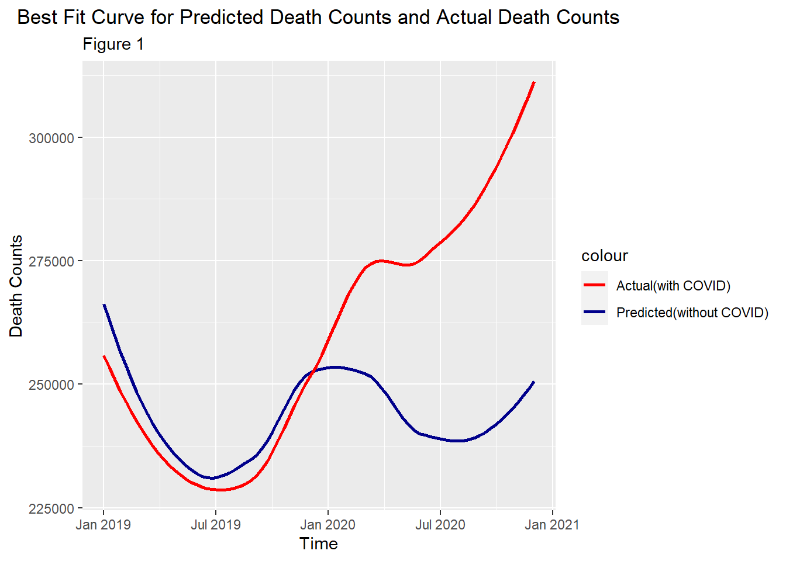
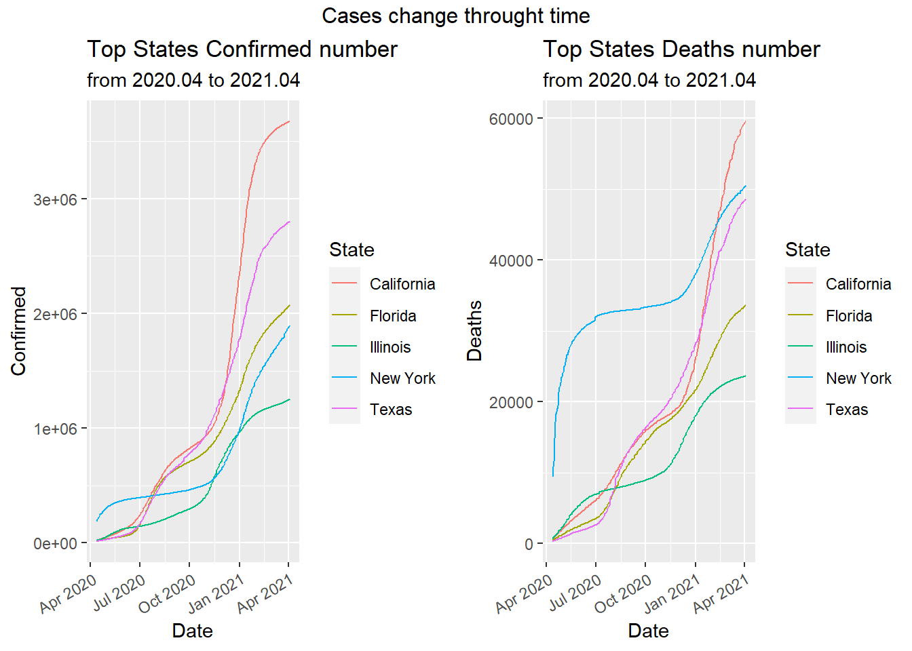

Chapter 5 Results
5.1 Belief 1 and 2
5.1.1 Time Series Analysis

Intuitively, death counts per month can be plotted and modeled by time series since data are collected on a monthly basis.
As the time series model is the foundation of our project, we would use it to predict death counts if there were pandemic (what would the data look like in a normal year). The predictions give us the baseline to compare with. Therefore, we want the predictions to be accurate and our model to be statistically reasonable. Therefore, we would analyze the time series model using some graphs.
Firstly, we want to check if the assumptions of stationarity and seasonality for time series hold.
The decomposition of the time series plot shows trend, seasonal effects and white noise (randomness). As evident from the decomposition, the data exhibit: 1.Strong seasonality with almost constant seasonal effects on a period of 12. Logically, the constant seasonal effect also makes sense, suggesting that more people die in winter perhaps because of winter flu and temperature. 2.Trend is generally increasing with a few exceptions at 2015.6 and 2018.6. The trend agrees with what we have discovered in the introduction: death counts/rate is increasing in the past decade. 3.There is no clusters or patterns. White noise is randomly distributed with a mean of 0.
Stationarity and seasonality hold. Time series plot seems like a good approach and from here we develop some intuition that when comparing death counts, we we should take into account that there are more deaths in winter than in summer.
##
## ARIMA(2,0,2)(1,1,1)[12] with drift : Inf
## ARIMA(0,0,0)(0,1,0)[12] with drift : 992.9256
## ARIMA(1,0,0)(1,1,0)[12] with drift : 975.9687
## ARIMA(0,0,1)(0,1,1)[12] with drift : Inf
## ARIMA(0,0,0)(0,1,0)[12] : 1006.234
## ARIMA(1,0,0)(0,1,0)[12] with drift : 978.972
## ARIMA(1,0,0)(1,1,1)[12] with drift : Inf
## ARIMA(1,0,0)(0,1,1)[12] with drift : Inf
## ARIMA(0,0,0)(1,1,0)[12] with drift : 986.8855
## ARIMA(2,0,0)(1,1,0)[12] with drift : 977.8282
## ARIMA(1,0,1)(1,1,0)[12] with drift : Inf
## ARIMA(0,0,1)(1,1,0)[12] with drift : 976.5776
## ARIMA(2,0,1)(1,1,0)[12] with drift : 980.3347
## ARIMA(1,0,0)(1,1,0)[12] : 979.3249
##
## Best model: ARIMA(1,0,0)(1,1,0)[12] with drift## Series: tsData
## ARIMA(1,0,0)(1,1,0)[12] with drift
##
## Coefficients:
## ar1 sar1 drift
## 0.5195 -0.3903 361.1227
## s.e. 0.1325 0.1546 106.1293
##
## sigma^2 estimated as 33457901: log likelihood=-483.52
## AIC=975.04 AICc=975.97 BIC=982.52
The automatically generated model is ARIMA(1,0,0)(1,1,0)[12]. The ACF and PACF plots agree with that model and therefore we will be using this simple model to predict what would death counts look like if there were no pandemic

Visually, the predicted data and the actual data look consistent. The predictions capture model trend and seasonality.
5.1.2 Comparison and Analysis

The dark blue line is a predicted line which simulates the death counts if there were no pandemic. We have predicted 2019 death counts to see if the pandemic had started before 2020 under the under cover of winter flu. Logically, the earlier in 2019, the less likely the pandemic had started. Therefore, the early data in 2019 could also serve as a validation set. Before Nov 2019, the two graphs are similar in terms of shape and values. This reassures that the fitted model is accurate. Based on this plot, we have three observations: 1. Predictions always overestimated death counts before Nov 2019. The actual death counts surpassed prediction in Nov 2019 and the number kept increasing until May 2020 while it was expected to drop according to predictions. It seems the actual line has deviated from predictions since Nov 2019, which supports our first belief that the pandemic had started before 2020. 2. The increasing trend in actual death counts was flattened in Jun and Jul 2020. It seems that pandemic became not as killing in summer. Yet, the difference between the two curves were still increasing and we should also remember that death counts is generally expected to be lower in summer. Therefore, we should take this into account and plot more graphs. 3. The death counts rise again after July 2020.
We cannot conclude for the second belief. In order to further investigate our 2nd and 3rd observations made above, we use another graph to take a closer look at our data by month.
This plot groups data by month, that is plotting 12 graphs according to 12 months. This removes month-induced effects. Based on figure 2, we have another 3 observations: 1. The death counts in Feb and Mar 2020 were actually the same as predicted values. More importantly, we actual death counts in Jan 2020 is much less than the predicted. This not only rejects the first belief, but also conflicts with figure 1 which shows that death counts in Jan, Feb and Mar 2020 were more than the predicted. 2. From May - Oct 2020, the death counts were greater than the predicted. However, the gradient of the red curve or differences between the two curves are less. 3. Death counts surge again after Oct 2020.
Therefore, we could almost conclude that the pandemic was not as killing in summer and only in summer. As for the conflicts we found in the first observation, we will investigate that using another plot.
This plots the raw data without any smoothing. Clearly, actual death counts were always less than the predicted before March 2020. Figure 1 gives us the illusion that actual death counts surpassed the predicted since Nov 2019 as the actual data in Nov 2019, Dec 2019, Jan 2020, Feb 2020 and Mar 2020 were pulled by the very big number in April 2020 in smoothing. Therefore, the pandemic did not start before 2020. Based on only data and plots, its started after Mar 2020 which agrees with official records. The first belief is not true.
5.2 Belief 3
Starting from this section, we will be examining infection rate. Therefore, we will use the reported COVID-related data rather than all-cause death counts.
5.2.1 Country
We gathered the data from 2020-04-12 to 2021-04-03 in US. In the 3rd of April, more than 30M people in the US has been infected with coronavirus and 0.6M people has dead because of COVID. From April in 2020 to November in 2020, there are steady increase in the number of confirmed people. After November, there is a surge in the number of confirmed people until February 2021 and the increasing trend has been slowing down.
5.2.2 State
After getting the sense of the overall country, we have displayed Top 5 states in terms of number of accumulated confirmed cases as below. In terms of confirmed case, California is top 1: 487.1 million people has been affected by COVID-19 in total, followed by Texas and Florida, 390.1 and 304.7 separately. In terms of Deaths case, New York has most death cases (12.5M) followed by California and Texas. The death rate of New York (4.7%) is much higher than California (1.5%) though the confirmed case of California is larger than the confirmed case of New York .
5.2.2.1 State over time
After observing the overall cases in accumulated term, we want to see how the Confirmed/Deaths number change in state over time. New York showed a sudden increase at the beginning of the pandemic and had the most cases. However, the increasing became relatively sluggish after summer on both confirmed cases and death cases until the end of the 2020 where there is a surge in the numbers.
California and Texas have very similar trends at the beginning of the pandemic. Though the change of confirmed cases and death cases was fluctuating in the two states, the overall trend was increasing at a high speed. The increasing speed in confirmed cases of California exceeded that of Texas around December of 2020 and after then California became the first place over all states in terms of confirmed cases. After Feb of 2021, The daily death cases of California surpassed New York and became the Number one over all states.
Florida kept a steady increasing pace in both death cases and confirmed cases and on April 2021, the daily confirmed case in Florida ranked 3rd and death cases ranked fourth over all States.
Illinois had slowest increasing speed compared to other four states at the beginning of pandemic. However, around Nov 2020, there was a sudden increase in daily cases. Illinois ranked fifth in both daily confrimed cases and death cases in April 2021.

5.2.2.2 State the latest report
The interactive plot below shows the latest report on April 3rd 2021. This map can give us the intuitive sense of what is going on in different states. The color of different shades shows the number of confirmed cases in different states. We notice that, in April 3rd 2021, California has most number of confirmed cases followed by Texas and New York. The central area of United States has similar condition. Most confirmed cases are gathered in the east, west and south coastal regions.
To conclude, we noticed that there are clearly differences between states in terms of confirmed and death cases. The increasing pattern over time for each state varies as well. These difference may due to complicated factors including density of population, mobility of population, government policy, state actions and etc.
5.2.3 Race
5.2.3.1 Cases of Race in Different State
We selected the most recent date available in our dataset (2021-03-07) and plot the number of confirmed cases for Asian, White and Black, Hispanic in the top 5 states in terms of number of confirmed cases individually.
We noticed that Hispanic had most cases in California followed by Florida. The cases in Illinois and New Jersey had far more less that that in California in Hispanic race. The total number of white cases ranked number one among all race and it distributed evenly among the top 5 states: California, Florida, Ohio, Pennsylvania and Tennessee. Asian haD most confirmed cases in California and the total cases was the smallest compared to other three race. Black had relatively even distribution for confirmed cases in top 5 states.
5.2.3.2 Cases of Race per 100000 People
From the information above, we only know white people has the most cases in absolute value but we cannot conclude that white people has higher risk for COVID, since white people may constitute for the highest population in US, thus it is expected to have the highest cases. Thus, we added population number for each ethnicity and calculated the cases proportion over their own ethnicity population (infection rate and death rate).
In our analysis, we would only account for the main ethnicity: “White”, “Hispanic”, “Black”, “Asian”, “Multiracial”, “AIAN”, “NHPI”. COVID cases per 100,000 people are displayed by ethnicity.
From graph, we noticed that in 100,000 Hispanic people, 88 were affected by COVID and 2 died with COVID. Hispanic has THE highest infection rate and death rate due to COVID among seven race.
NHPI was ranked the second. Among 100,000 NHPI people, 76 people were affected by COVID and 2 people were dead due to COVID.
It is noteworthy that though white has the largest number of confirmed cases and death cases in total, its infection rate and death rate is ranked the fourth and the third among these seven races. It seems that Hispanic and NHPI may be more vulnerable to COVID-19 compared with other races.
5.2.3.3 Cases of Race per 100,000 People
We want to investigate whether or not there is a significant difference in the number of COVID deaths by ethnicity in the United States by using statistical methods. We would like to compare the distribution of the US population by ethnicity with the distribution of COVID-19 deaths by ethnicity.
Visually, we used pie charts. The left pie chart shows the death cases percentage for each race and the right pie chart shows the actual ethnicity ratio in US.
Chi-Squared Test Mathematically, We used chi-squared test.
Our null hypothesis, \(H_0\) is that the distribution of our sample data (the number of COVID deaths by race) matches the distribution of the population of the US by race.
Our alternative hypothesis, \(H_a\) here is that the distribution of our sample data does not match the distribution of the population of the US by race.
##
## Chi-squared test for given probabilities
##
## data: observed_frequency_deaths
## X-squared = 19118, df = 6, p-value < 2.2e-16P- value is less than 2.2e-16 and X-squared = 19118. Since P- value is really small (less than 0.05), we can reject the null hypothesis at alpha level 0.05 and conclude that the distribution of COVID deaths by race do not match what we would expect them to be (based on the distribution of population by race). It means some race may be more vulnerable to COVID-19 and some others are not.